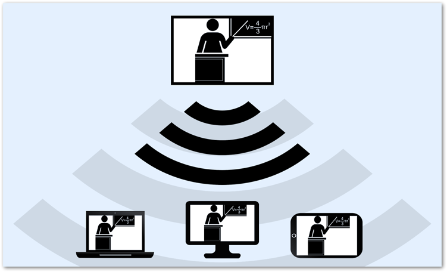
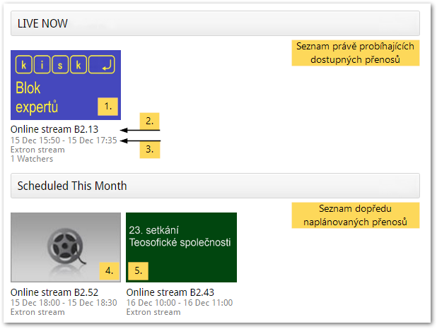

Živý přenos (Live Stream)¶
Co je to streamování a jak funguje?¶

V učebnách vybavených automatizovaným nahrávacím systémem můžete své přednášky nejen zaznamenávat, ale také streamovat přes internet. Streamování můžete chápat jako živé vysílání, díky kterému je možné dění v učebně sledovat i online. Svou přednášku tak můžete zprostředkovat i lidem, kteří by se jí např. z kapacitních důvodů nemohli zúčastnit osobně.
Potřebnou technikou pro streamování v současné době disponují učebny v budovách Carly (A a B2).
Streamované video vypadá stejně jako záznam z učebny (viz obr. 2). Přednášejícího snímá kamera napevno umístěná v učebně. Pokud je zapnutý projektor, vkládá se promítaný obraz přímo do videa, takže je zajištěna dobrá čitelnost prezentací a dalších podpůrných materiálů. Aby byl přednášející dobře slyšet, doporučujeme použít některý z mikrofonů umístěných v katedře.

Co je třeba zařídit?¶
Na rozdíl od záznamu, který mohou obsloužit sami vyučující, nastavují streamování z učeben pracovníci Kanceláře e-learningu FF MU. Pokud chcete využít možnosti živého přenosu, stačí s dostatečným předstihem (alespoň tři dny předem) napsat e-mail na elf@phil.muni.cz, a my pro Vás vše potřebné nastavíme. V e-mailu nezapomeňte uvést především kdy a ve které učebně se bude přednáška konat a přesný čas, po který má být stream k dispozici.
Pokud budete chtít, můžete nám poslat i krátký doprovodný text a náhledový obrázek, který ke streamu připojíme a který případným divákům usnadní orientaci..
Jak stream sledovat?¶
Živé přenosy z učeben lze sledovat v rámci fakultní knihovny médií Medial. Jsou-li nějaké streamy k dispozici, objeví se v navigační liště Medialu tlačítko “Live Now!”, pomocí nějž se dostanete na seznam dostupných přenosů.
Poznámka. Pokud je v navigační liště místo tlačítka “Live Now!” pouze “Live”, znamená to, že jsou některé přenosy naplánované, ale momentálně žádný neprobíhá.

Jednotlivé přenosy jsou pojmenovány podle učebny, ze které jsou vysílány. Orientovat se můžete také podle času, na který je streamování naplánováno, nebo podle náhledového obrázku, pokud je připojen. Výběrem konkrétního streamu spustíte jeho přehrávání.
Sekce “Scheduled This Month” (“Naplánováno na tento měsíc”) obsahuje přenosy, které jsou naplánované, ale zatím nedostupné. U každého z nich najdete informaci o tom, od kdy do kdy bude přístupný.

- Právě probíhající stream
- Označení učebny, ze které je přenos vysílán
- Čas, po který bude stream dostupný
- Naplánovaný stream (bez náhledového obrázku)
- Naplánovaný stream (s náhledovým obrázkem)
Stream je přístupný všem návštěvníkům Medialu, tedy i nepřihlášeným hostům.
Časté dotazy (FAQ)¶
V navigačním panelu není tlačítko Live ani Live Now!
Přenos zřejmě ještě není nastavený.
Místo streamu se mi zobrazuje nápis “This live channel is not currently available.”
Stream v této chvíli není přístupný. Přesný čas přenosu zjistíte na stránce se seznamem přenosů.
Místo streamu se mi zobrazuje nápis “This video is secured and not currently available to you.”
Ke sledování přenosu nemáte dostatečná oprávnění. Zkuste se přihlásit do Medialu, případně kontaktujte správce Elfu.
Místo streamu se mi zobrazuje nápis “Error loading player: No playable sources found.”
Pravděpodobně máte neaktuální zásuvný modul Flash. Nejnovější verzi získáte na stránkách společnosti Adobe.
Vytváří se při streamování automaticky záznam?
Ne, pokud chcete streamovanou přednášku také nahrávat, je nutné ručně spustit záznamové zařízení.
Je možné streamovat přednášku z jedné učebny do druhé?
Ano, stream z jedné učebny lze snadno promítat v jiné učebně. Je-li to nutné, můžete takto vyřešit problémy s kapacitou učebny např. při větších konferencích.